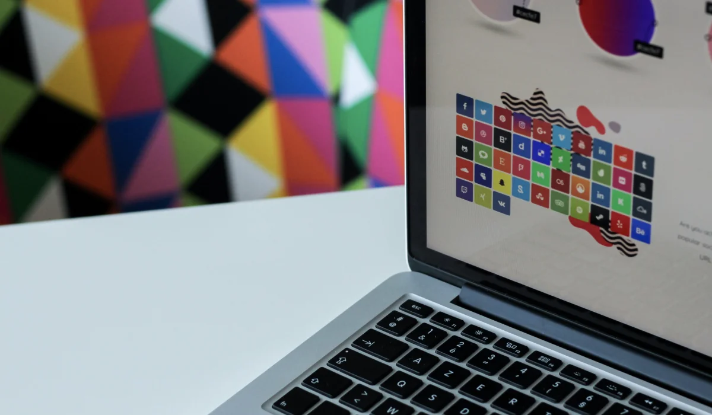

Привет! На этом web–ресурсе, будет рассказываться о направлении дизайна–motion. Если говорить проще, то моушен-дизайнер – это такой человек, который занимается созданием компьютерной анимации. Звучит скучно, хотя на деле, конечно, всё намного сложнее и интереснее
Интернет технологии
Интернет стал точкой входа, он вместе с технологиями развивается сумасшедшими темпами. Сначала 3g, потом 4g, сейчас уже 5g вышки ломают из-за того, что считают их разносчиками коронавируса.
Появляются сервисы и услуги, которые работают исключительно в интернете. Например, приложения по переводу денежных средств, онлайн шопинг, библиотеки, мессенджеры и социальные сети — все, с чем вы сталкиваетесь ежедневно.
Видео контент
К 2021 году 82% глобального интернет-трафика составит видеоконтент, преобладающая доля которого придется на Internet-TV. Мы видим, как активно развивается видео контент, появляются стриминговые сервисы, блогинг, инстаграм igtv. Производство и потребление видео-контента растет невероятными темпами — это факт.
Motion дизайнер — тот человек который занимается созданием завораживающей кино — анимации и потрясающих рекламных заставок в том числе на вашем любимом YouTube. Дизайнер этой сферы занимается созданием анимационной графики в интернете и на телевидении, в рекламе, кино, мобильных приложениях, интерфейсов и видео игр. Вдохновиться и полюбить анимацию работами можно на Vimeo или Dribble.
Моушен-дизайнер способен с помощью единства картинки, текста и звука донести самую сложную идею, информацию или посыл до зрителя в увлекательном и удобоваримом формате
Профессия моушн-дизайнера объединяет в себе огромное количество навыков, знаний и умений. Это дизайнер-оркестр: сценарист, художник, режиссер, оператор, монтажер, продюсер, саунд-дизайнер и даже программист.
Видеоклипы, реклама, заставки для видеороликов и телевизионных передач, анимированные презентации и логотипы, опенинги и титры, видеоигры – вот неполный список того, где применяется motion design. Неудивительно, что рост на таких специалистов растет.
Задача:
Преобразовывать статистические изображения в анимированную форму. Взаимодействовать со звуковым оформлением, текстом и правильно сочетать их в общем видео.
Что нужно уметь моушн дизайнеру?
Очень важно понимать типографику, потому что неправильно подобранный шрифт способен убить эффект от самой качественной анимации. Классным плюсом будет владение сценарным мастерством.
Конечно, основной необходимый навык – работа в специализированных программах. Для motion это:
Если говорить о софт-скиллс, то тут пригодятся внимательность к деталям, усидчивость, работа в команде, коммуникативность, навыки самопрезентации, обучаемость и само желание обучаться и, конечно, креативность.
После обучения вам открываются все дороги, ведь формат короткого видео становится основным в потреблении информации, и эта тенденция только усиливается. Вы сможете найти работу в киноиндустрии, на телевидении, в бизнесе, на образовательных порталах, в маркетинге – или работать на себя, беря разове заказы.
Поэтому, если вы чувствуете, что motion design ваше – не затягивайте с обучением. Сейчас конкуренция на рынке довольно низкая, и вы сможете быстро реализовать себя в этой профессии. Удачи!